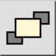

Это автоматический перевод.
Toolbar / Icon:

Menu: Изменение > Draw Order > На передний план
Shortcut: M, F
Commands: tofront | mf
Description:
Changes the order in which entities are displayed. Use this tool to bring entities into the foreground if they are hidden behind images, solid fills or other entities.
Procedure: